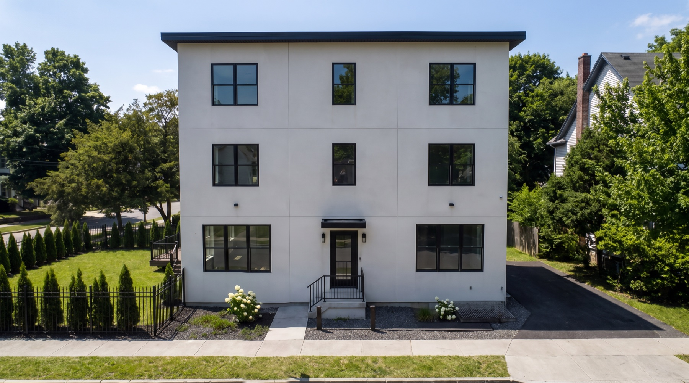
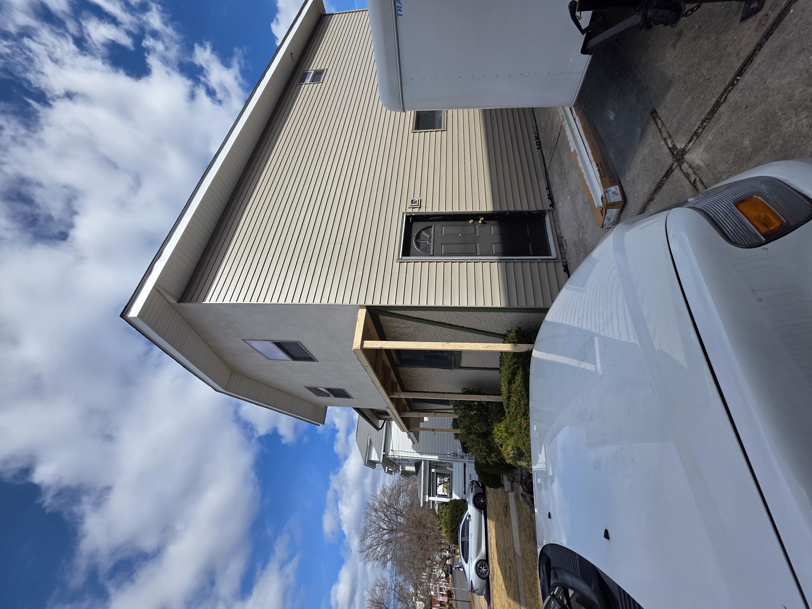
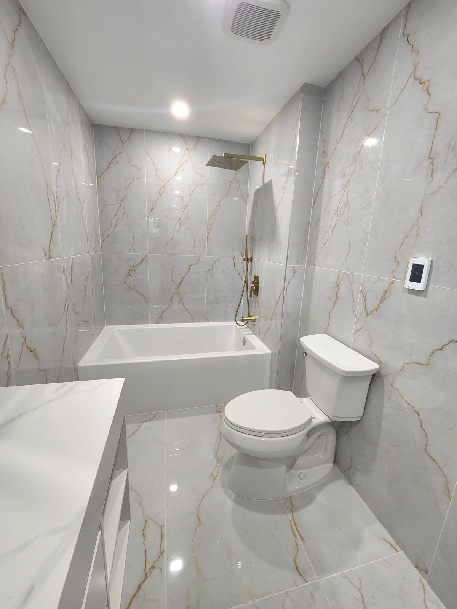
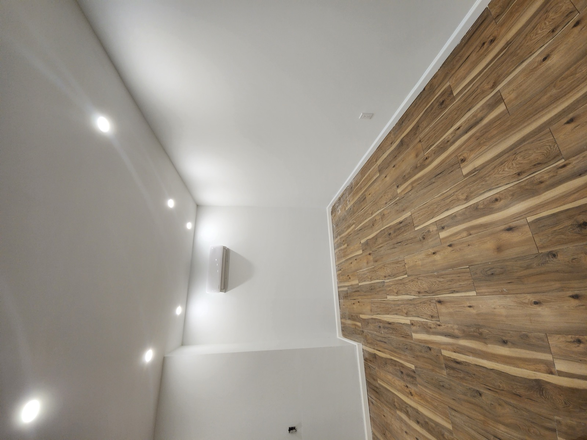
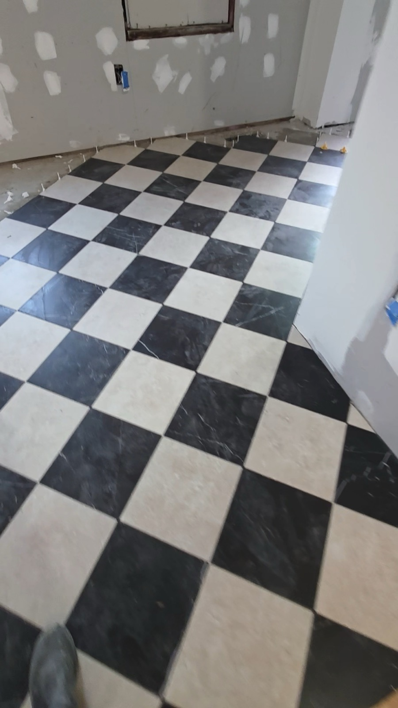
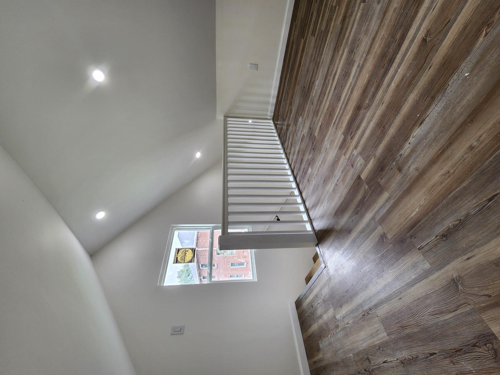
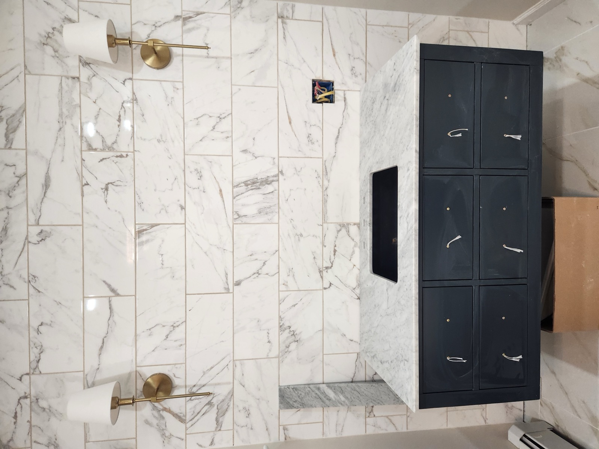
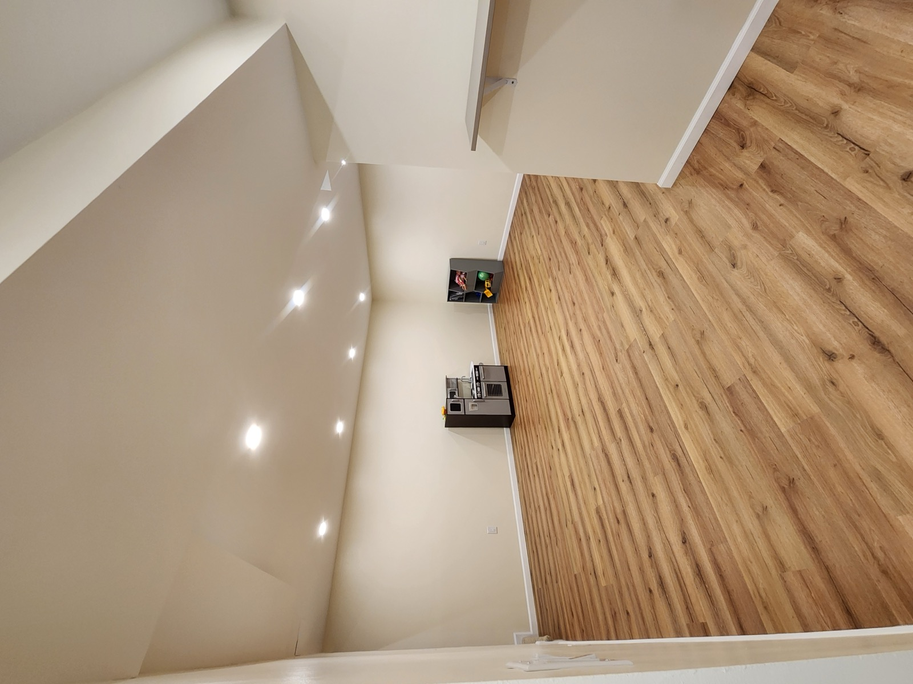
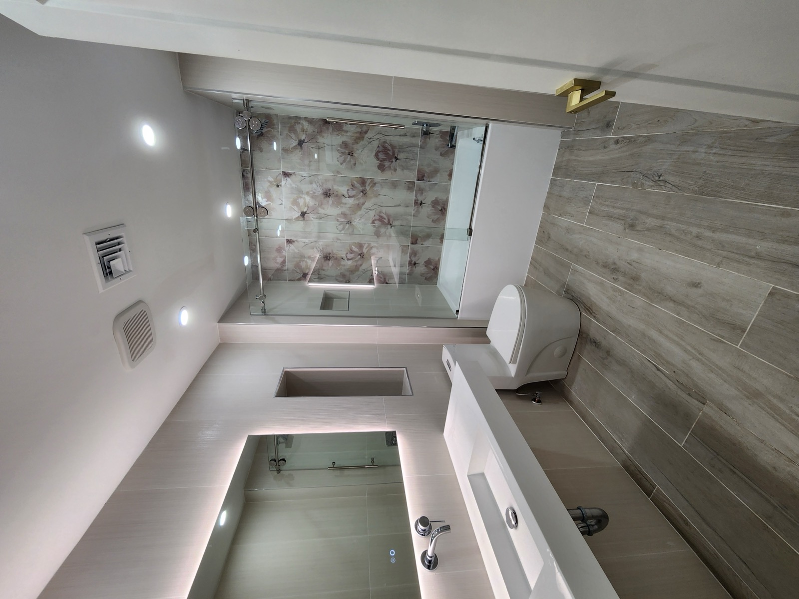
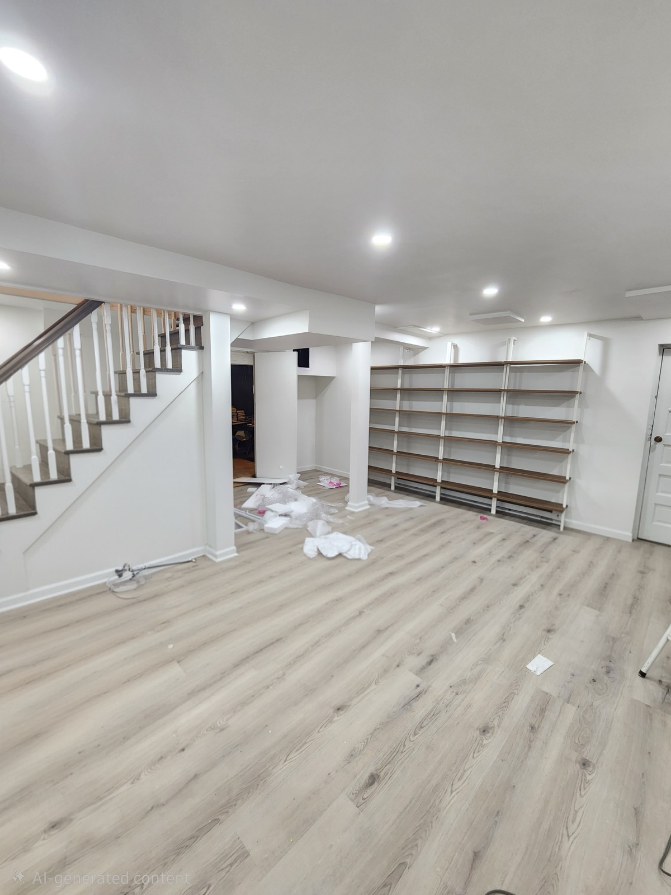

PSI Construction · Kingston, PA
Kingston, PA General Contractor
Kingston is where most of our work has been. More than two dozen PSI jobs are in the borough — new homes, additions, whole-house rebuilds, basements, kitchens and bathrooms — and our office is just across the river.
Building in Kingston
Most of the houses we work on in Kingston are older homes on tight lots, and that shapes the job. Opening a wall means finding out what earlier owners did behind it, so the survey and the scope come first and anything that changes is priced and agreed in writing before it is done.
The jobs below are all in Kingston. They include a new three-storey house on a corner lot, a full second storey added to a single-storey house, a house rebuilt after a fire, another taken back to framing after water damage, a duplex turned back into a single-family home, and a detached garage rebuilt as two apartments.
Our office is at 190 Wyoming Street in Wilkes-Barre, a few minutes away. Being this close, we take single-room jobs in Kingston — a bathroom, a basement, a kitchen — as well as whole houses.
Work we’ve done
Our Kingston jobs
-
Kingston, PA
New Construction — 3-Story Residence
New three-storey residence on a corner lot — 4,752 sq ft, Residential (R-1), built to the 2018 IRC/IBC.
-

Kingston, PA
Small Shower Enlarged → Walk-In
A cramped corner shower rebuilt at nearly double the footprint by taking in the closet next door.
-

Kingston, PA
Water Damage Restoration
A house taken back to framing after water damage — ceilings and walls opened, insulation and wiring renewed, then boarded, floored and finished throughout.
-

Kingston, PA
Basement Renovation
An unfinished basement turned into finished living space — bedrooms, a full bathroom with a tiled tub surround, new flooring and lighting throughout.
-

Kingston, PA
Second-Storey Addition & First-Floor Renovation
A full second storey built onto a single-storey house — framed, sheathed, roofed and sided — with the first floor renovated underneath it.
-

Kingston, PA
Porch Enclosure → Master Bathroom
An exterior porch off the master bedroom, enclosed and converted into the master bathroom, with heated tile floors.
-

Kingston, PA
Exterior Room Addition
A new room built onto the house — framed, roofed and sheathed from the ground up, then finished inside with the original brick left exposed.
-

Kingston, PA
Fire Rebuild — Whole House
A house lost to fire and rebuilt in full — structure, stair, floors, kitchen and baths, finished throughout.
-

Kingston, PA
Full Gut — Duplex to Single-Family
A large gut renovation turning a two-unit duplex back into a single-family home — stripped to the framing throughout, re-framed, then tiled, decked and fitted out.
-

Kingston, PA
Garage Converted to Two Apartments
A detached garage taken back to its block shell and rebuilt as two self-contained apartments — new slab, framing, stair, kitchens, bathrooms and finishes throughout.
-

Kingston, PA
Bathroom Renovation, Primary Bath Addition & Stair Railing
An existing bathroom taken back to the studs and rebuilt, a new primary bathroom added off the bedroom, and the stair railing replaced.
-

Kingston, PA
Home Renovation & Basement Finish
A large first-floor renovation combined with a full basement finish — the house stripped back and rebuilt above, and an unfinished basement turned into bedrooms, bathrooms and living space.
-

Kingston, PA
Commercial Bathroom Gut — Two Bathrooms
A commercial remodel of two bathrooms off a shared hallway, taken back to the studs and floor joists and rebuilt — re-framed, re-plumbed, waterproofed and fully tiled.
-

Kingston, PA
Basement Renovation
An unfinished basement rebuilt into finished living space — new stair, drywall throughout, lighting, flooring and built-in shelving.
Every photograph
Start to finish
Swipe through the photographs. Tap one to see the whole job — each is labelled with the town it was built in.
How much work have you done in Kingston?
More than two dozen jobs so far, from single bathrooms to a new three-storey home. The photos on this page are all from Kingston jobs.
Do you take smaller jobs in Kingston?
Yes. Because we are close, we take single-room work — a bathroom, a basement, a kitchen — as well as additions, whole-house renovations and new homes.
Do you also work in Forty Fort, Edwardsville and Kingston Township?
Yes. The same crews work across the West Side — Forty Fort, Wyoming, Edwardsville, Swoyersville, Luzerne and Kingston Township — and on into the Back Mountain.
Can I meet you in person?
Yes. Our office is at 190 Wyoming Street in Wilkes-Barre, just across the river. Visits are by appointment — call 570-338-8PSI (774).
Get a quote
Tell us about your project
A few multiple-choice questions so we show up already knowing the job. Every one has a “not sure yet” option. Or call — 570-338-8PSI (774).